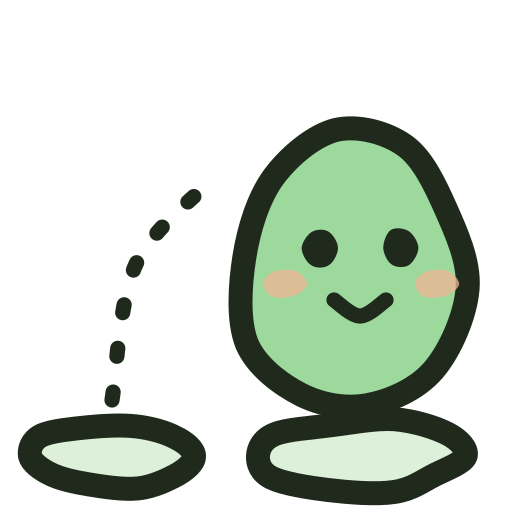
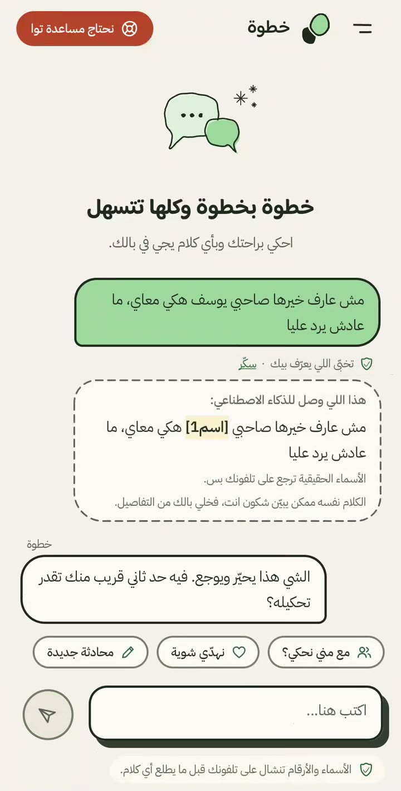
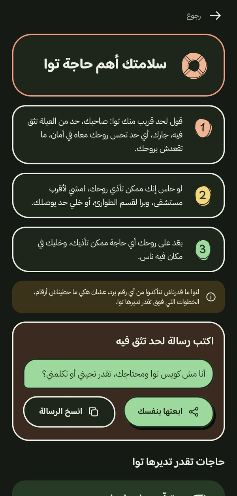
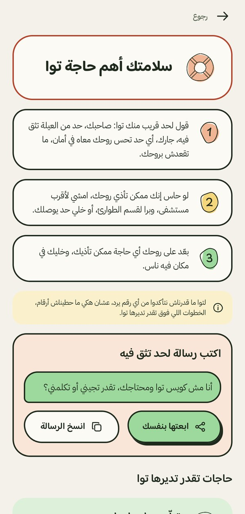

فريق خطوة · AI4LY Codathon · الصحة النفسية في ليبيا · 8 أكتوبر 2026
الساعة الثانية فجرًا
عمر، 19 سنة. طالب. شخصية افتراضية.
لا يحتاج إلى تشخيص. يحتاج إلى شخص واحد.
2:04
مش عارف مع مني نحكي
المشكلة
الضيق موجود… لكن الطريق إلى المساعدة مقطوع
0
قالوا إنهم حاولوا الانتحار خلال العام الماضي
0
حصلوا بعدها على مساعدة من مختص
مسح لـ427 طالبًا في 20 مدرسة ثانوية، سوق الجمعة، طرابلس، أعمارهم 15 إلى 19 · تقرير ذاتي، وليس رقمًا وطنيًا · Ganbur & Elhamadi, AlQalam J. Med. Appl. Sci., 2026
سألنا أنفسنا
أين ينقطع الطريق بالضبط؟
الضيق
هنا ينقطع
إخبار شخص واحد
المساعدة
الحواجز النفسية تمنع البدء أكثر من نقص الخدمات
الخجل، والرغبة في تدبر الأمر وحدك، وعدم الشعور بالحاجة. مسوح منظمة الصحة العالمية في 24 دولة.
سنوات من الانتظار قبل أول تواصل
التأخير أكبر في الدول النامية، ولدى من بدأت معاناتهم في سن صغيرة.
Andrade et al., Psychological Medicine 2014 (WHO World Mental Health Surveys) · Wang et al., World Psychiatry 2007
وفي ليبيا تحديدًا
ما يقوله الطلاب أنفسهم
الوصمة والخوف على السرية
اللجوء إلى الأهل والأصدقاء الموثوقين
لا دعم نفسي معروف داخل الجامعة
المشكلة ليست قلة المعلومات… المشكلة هي الخطوة الأولى نحو إنسان.
مقابلات مع 21 طالبًا وأستاذًا في جامعة ببنغازي (El-abbar 2023) · مراجعة منهجية لطلب المساعدة لدى العرب (BMC Psychiatry 2023) · الشباب يلجؤون للأصدقاء أولًا (Rickwood et al. 2005; Gulliver et al. 2010)
كل تطبيقات المحادثة تريدك أن
تبقى معها.
خطوة يريدك أن تتحدث مع شخص آخر.
مساعد بالذكاء الاصطناعي، نجاحه يُقاس بمدى سرعة وصولك إلى شخص تثق به.
ما الذي يجعل خطوة مختلفًا
ثلاثة أشياء
يفهم الليبي
اللهجة الليبية، كما يكتبها الشباب فعلًا.
لا يعرف من أنت
الأسماء والأماكن والأرقام تُحذف على الهاتف نفسه، قبل أن يراها الذكاء الاصطناعي.
يوصلك إلى إنسان
يستمع أولًا، ثم يقترح من تتحدث إليه، ويكتب الرسالة الأولى… وأنت من يرسلها.
لنرَ عمر وهو يستخدم خطوة
من «مش عارف مع مني نحكي» إلى رسالة جاهزة لشخص تثق به
الاسم يتلوّن وهي تكتب ويُحذف قبل أن يغادر الهاتف يستمع، ولا يشخّص يقترح أشخاصًا، مع السبب رسالة أولى… يرسلها بنفسه المساعدة العاجلة في كل شاشة
ضع تسجيل العرض في pitch/media/demo.mp4
الخصوصية خطوة تقنية، وليست وعدًا
ما الذي يغادر الهاتف فعلًا؟
على هاتف عمر
صاحبي يوسف ما عادش يحكي معاي
ما يصل إلى الذكاء الاصطناعي
صاحبي يوسف[اسم1] ما عادش يحكي معاي
لا حساباتلا سجلات محادثات على الخادمالأسماء تعود على الهاتف فقطالحفظ اختياري ومشفّر على الهاتف
استخدام فعلي للذكاء الاصطناعي
ماذا يفعل الذكاء الاصطناعي بالضبط؟
في كل رسالة
فحص الخطر
إن شكّ، يفتح صفحة الطوارئ، لا العكس.
استمع أولًا
إصغاء قبل أي اقتراح
مستوحى من الإسعافات الأولية النفسية: انظر، استمع، اربط.
ثم اربط
الشخص المناسب
من قائمة ثابتة، مع السبب، ورسالة أولى بلهجتك.
ما يخص السلامة نص ثابت مراجَع، لا يولّده الذكاء الاصطناعي أبدًا: صفحة الطوارئ وأرقامها.
النماذج: GPT-OSS 120B لفحص الخطر، واحتياطيه Gemini · Gemini Flash وحده للنصوص باللهجة الليبية، واحتياطيه نص ثابت
قسناه بأنفسنا
اختبرناه على رسائل افتراضية
0 من 52
اسمًا ورقمًا أزالها الهاتف، دون إنترنت
0 من 20
صياغة خطرة التقطها فحص الخطر
ولا إنذار كاذب على 10 عبارات عادية
0 من 10
طلبات تشخيص أو دواء رُفضت بأمان
وكل خطوة في التصميم مبنية على أبحاث منشورة:
أثر العلاقات الاجتماعية (Holt-Lunstad 2010)حواجز طلب المساعدة لدى الشباب (Gulliver 2010)قوة الخطة الملموسة (Gollwitzer & Sheeran 2006)
اختبارات داخلية على مجموعات رسائل افتراضية صغيرة، 7 أكتوبر 2026 · أرقام وأخطاء فقط، وليست ادعاءات سريرية · المصادر كاملة في docs/evidence.md
لم نبنِ بعيدًا عن الدولة
راجعنا المشروع مقابل وثيقتين وطنيتين
الاستراتيجية الوطنية للذكاء الاصطناعي 2026–2030 الميثاق الوطني لأخلاقيات الذكاء الاصطناعي، الإصدار 2.0
ما تقوله الوثيقةما يفعله خطوة
الصحة من أربعة قطاعات ذات أولوية في المرحلة الأولىخطوة يخدم الصحة، ويكمّلها دون تشخيص
القيم: الإنسانية، والأمن والخصوصية، والشموليةالإنسان في المركز، والهوية تُحذف على الهاتف، ومجاني للشاب
مساعد باللهجة الليبيةيفهم الليبي كما يكتبه الشباب
السيادة الرقمية، ومشاريع تجريبية سريعة الأثرتجربة في جامعة واحدة، ثم استضافة ليبية
الميثاق: متطلبات الفئة عالية الخطورةتوقف آمن، وموافقة صريحة، وشرح لكل اقتراح، ولا تلاعب
خطوة لا يبتعد عن الاستراتيجية الوطنية… بل يخدم أولوياتها.
الاستراتيجية الوطنية للذكاء الاصطناعي 2026–2030 (يونيو 2026): ص 5، 6، 8، 20، 29 · الميثاق الوطني لأخلاقيات الذكاء الاصطناعي، الإصدار 2.0: ص 16 · نقول «مصمم وفق»، لا «معتمد»
كم يكلّف؟
مجاني للشاب… وبتكلفة لا تُذكر
أقل من 0 سنتات
للمحادثة الواحدة، تقديريًا. عشرة آلاف محادثة شهريًا: عشرات إلى بضع مئات من الدولارات.
إعلانات اشتراك للشاب بيع بيانات
تقدير من حجم الطلبات الفعلي (نحو 30 ألف رمز للمحادثة) بأسعار Gemini Flash المنشورة · التكلفة الحقيقية: مراجعة مختص ليبي، والتحقق من أرقام الطوارئ، والصيانة
من يموّل خطوة، ولماذا؟
استدامة بلا إعلانات
الدولة
يغطي الصحة النفسية، ويبني قدرة ليبية في معالجة اللهجة.
الجامعات
نسخة تقترح مرشدي الجامعة المعتمدين.
المانحون الدوليون
العاملون في الدعم النفسي في ليبيا: مدخل قابل للقياس لمساراتهم.
ترخيص طبقة الخصوصية
لتطبيقات أخرى تتعامل مع نصوص حساسة باللهجة الليبية.

مؤشر نجاحنا: كم شخصًا خطا خطوته الأولى نحو إنسان… لا كم بقي في التطبيق.
مقترحات للنقاش، لم يُتفق على شيء بعد · قياس الأثر بأسئلة اختيارية ومقياس GHSQ، دون أي تحليل لنص المحادثات
والخطوة التالية لنا نحن
من تجربة واحدة إلى ليبيا كلها
1
تجربة في جامعة واحدة
مع مراجعة مختص نفسي ليبي لكل المحتوى.
2
قياس الأثر الحقيقي
هل تواصل الشباب فعلًا مع شخص؟
3
استضافة ليبية، ثم التوسع
نقل الخادم إلى بنية تحتية ليبية.
خطوة لا يحل محل الطبيب النفسي.
بل يساعد شابًا ليبيًا على الخطوة الأولى نحو إنسان بكلماته، ودون أن يتخلى عن خصوصيته.
نبي نحكيلك على حاجة… أُرسلت
شكرًا لكم
ملحق اختياري
الآن، على الهاتف
مباشرة.
ليس تسجيلًا… النموذج يعمل الآن.

ملحق للأسئلة
ما الفرق عن ChatGPT؟
يفهم اللهجة الليبية، ومختبَر عليها.
يحذف هويتك على الهاتف قبل أن يصل أي نص إلى النموذج.
لا يشخّص أبدًا، ولا يكرر كلامك، ولا يدرّبك: يستمع ثم يربطك بإنسان.
ينتهي بخطوة ملموسة: شخص مناسب مع السبب، ورسالة جاهزة ترسلها أنت.
السلامة نص ثابت مراجَع، لا توليد.
ملحق للأسئلة
ماذا يحدث إذا كتب أحدهم عن إيذاء نفسه؟
زر «نحتاج مساعدة توا» في كل شاشة، ولا يعتمد على أي كشف.
كلمات الخطر الواضحة تُفحص على الهاتف، فتفتح صفحة الطوارئ دون إرسال شيء، حتى دون إنترنت.
ثم فحص بالنموذج في كل رسالة، يميل إلى الأمان عند الشك.
صفحة الطوارئ نص ثابت مراجَع، ولا يظهر معها أي نص مولَّد.
لا نعرض إلا أرقامًا تحققنا منها بالهاتف، مع تاريخ التحقق.


ملحق للأسئلة
أين تذهب البيانات؟
الأسماء والأماكن والأرقام تُحذف على الهاتف. النص المحذوف منه فقط يصل إلى خادمنا ثم إلى نموذج Google.
لا حسابات، ولا سجلات محادثات، ولا تحليلات على النص.
حفظ المحادثات اختياري: مغلق افتراضيًا، ومشفّر بمفتاح في الهاتف، ولا يدخل النسخ الاحتياطية، ويُحذف بلمسة.
السيادة: النموذج خلف خادمنا ويمكن استبداله، وخارطتنا تنقل الاستضافة إلى بنية تحتية ليبية.
ملحق للأسئلة
الميثاق الوطني لأخلاقيات الذكاء الاصطناعي
توقف آمن تلقائي: صفحة الطوارئ عند الشك.
موافقة صريحة قبل البدء، وشرح لما يُرسل وإلى أين.
قابلية الشرح: سبب مكتوب لكل اقتراح.
لا تلاعب: لا إشعارات، ولا سلاسل، ولا رسائل ذنب.
أقل قدر من البيانات، ورقابة بشرية وتدقيق مستقل مخطط لهما قبل الإطلاق.
ملحق للأسئلة
ما تقوله الأدلة… وما لا تقوله
تقوله: الدعم الاجتماعي يحمي، والشباب يلجؤون للأصدقاء أولًا، والحواجز النفسية تمنع البدء، والخطة الملموسة تدفع للفعل.
لا تقوله بعد: لا يوجد دليل على أن أي أداة رقمية تزيد طلب المساعدة في ليبيا. هذا ما ستقيسه تجربتنا.
ملحق للأسئلة
الفريق
Marwan Elamami
قائد الفريق ومهندس الذكاء الاصطناعي
Hiba Alshabani
مسؤولة الذكاء الاصطناعي
Ahmed Alaeb
مهندس الواجهات
Kawtar Gdoure
التقييم والتوطين
Anas Al-Thaabit
مهندس الخصوصية
عرض خطوة
افتح نافذة النص واسحبها إلى الشاشة الثانية، ثم ابدأ. التنقل من أي نافذة: → أو مسافة للتالي، ← للسابق. F ملء الشاشة، S نافذة النص، B شاشة سوداء، R إعادة المؤقت.